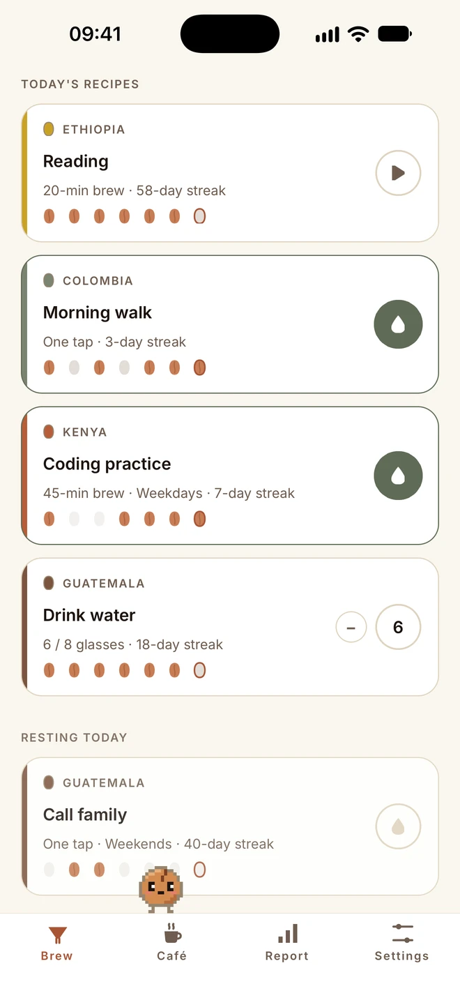

Every habit is a recipe
A recipe has a name, a target and the days it repeats; one-tap habits, counters and timed brews share the same list. Each keeps its own streak: rest days don’t break it, and once a month a “wet filter” pass forgives a missed day.